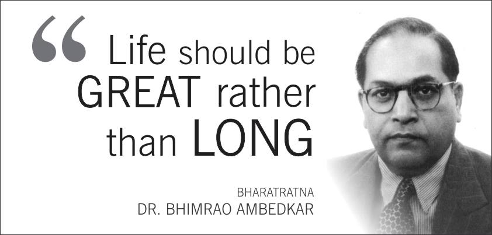

Ambedkar went on to become a renowned jurist and legal scholar. He played a pivotal role in advocating for the rights of the Dalit community and was a strong proponent of social justice and equality.
One of his most significant contributions was his role as the chairman of the Drafting Committee of the Constituent Assembly of India. He played a key part in formulating the Indian Constitution, which was adopted in 1950. His efforts ensured that the Constitution enshrined principles of equality, social justice, and fundamental rights for all Indian citizens, regardless of caste, religion, or gender.
Dr. Ambedkar was a tireless advocate for the rights of Dalits and worked relentlessly to eradicate the practice of untouchability. He converted to Buddhism in 1956, along with thousands of his followers, as a way to escape the caste system's oppressive constraints and discrimination.
Ambedkar was also a prominent political figure. He was a member of India's first cabinet after independence and held important portfolios, including Minister of Law and Minister of Justice. He continued to champion the cause of social justice and Dalit empowerment through his political career.
Dr. B.R. Ambedkar's legacy is immense. His ideas, writings, and
advocacy for the oppressed continue to inspire generations of Indians and social reform movements.
He is often referred to as the "Father of the Indian Constitution" and is celebrated as a symbol of
social justice and equality.
Dr. B.R. Ambedkar passed away on 6 December 1956 in New Delhi, leaving behind a lasting impact on
the social, political, and constitutional fabric of India. His contributions to the nation have
earned him widespread recognition and respect, and he remains an icon of social reform and progress
in India.
14 April 1891 Mhow, Central Provinces, British India (present-day Madhya Pradesh, India)
6 December 1956 (aged 65) New Delhi, India
Chaitya Bhoomi, Dadar, Mumbai, Maharashtra, India
Jurist | Social Reformer | Politician | Architect of the Indian Constitution | Dalit Rights Activist
The Annihilation of Caste | Thoughts on Linguistic States | The Problem of the Rupee: Its Origin and Its Solution | Buddha and His Dhamma
Dalit Rights Movement | Campaign against Untouchability | Drafting of the Indian Constitution | Promotion of Social Equality